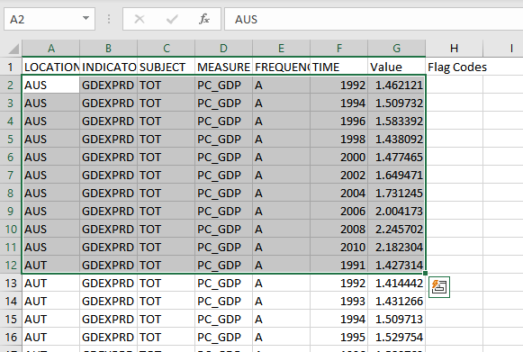
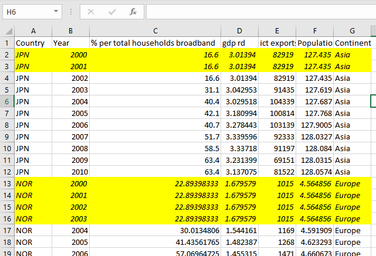
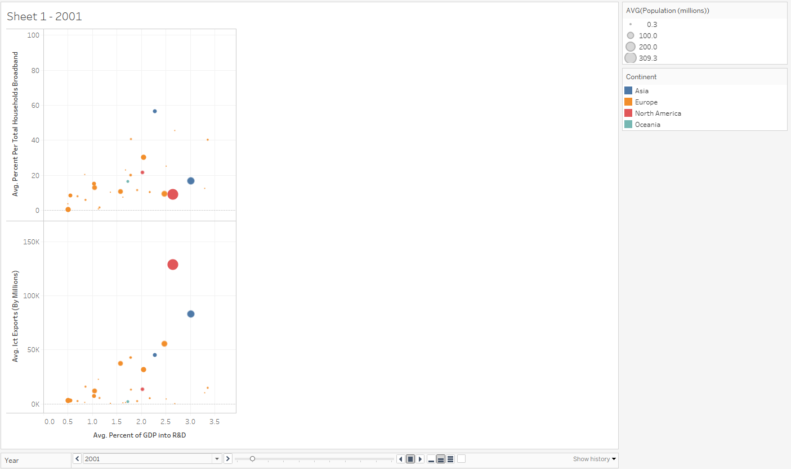
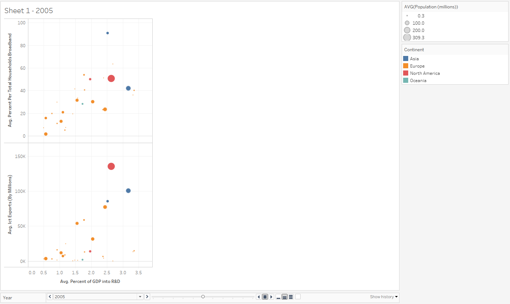
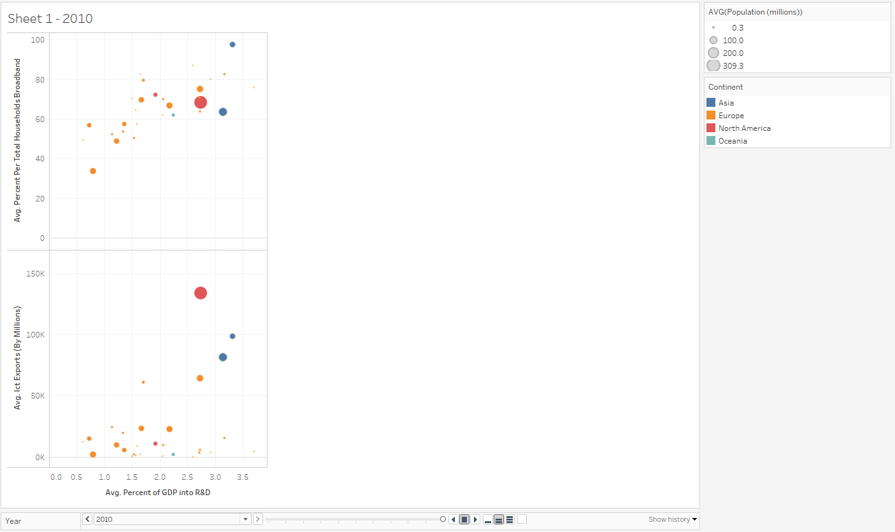

3.8.21
My first Tableau Project
My process started at data.oecd.org, where I then looked at the “Technology and Innovations” section. I came across “Gross domestic spending on R&D”, “ICT goods exports”, and “Households with broadband access” to illustrate a country’s advancements in exporting and developing domestic technologies. Originally, each data set was in this type of format:
According to what I learned, I noticed the OECD format of the columns are desired for tableau. After filling each column with my desired variables, I also filled in holes in the data to provide for a complete reading. I then saved this final document of processed data as a worksheet for use.
I noticed that a country’s spending on research and development does not significantly change over time, except by a small increase. However: there is a small positive correlation between R&D, exports, and broadband ownership over time:
 I noticed that a country’s spending on research and development does not significantly change over time, except by a small increase. However: there is a small positive correlation between R&D, exports, and broadband ownership:
Looking at broadband connection ownership, R&D had only slight correlation as most of the clustering movement of countries was mostly upward with a steep slope. Korea, the highest point of the cluster shows a steady progression with R&D and broadband connection with a more diagonal movement.
In sum, with minimal horizontal movement of the increase of investment into R&D, and the seemingly independent higher vertical movement with exports and broadband ownership, there is only a slight correlation. R&D proves to only be a minor factor among others that could contribute to a country’s technological development.